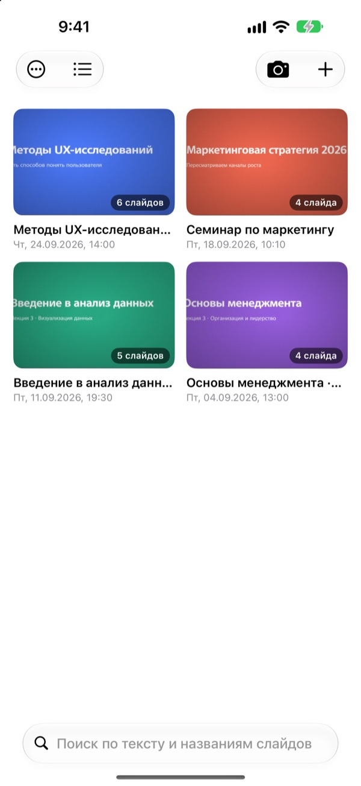
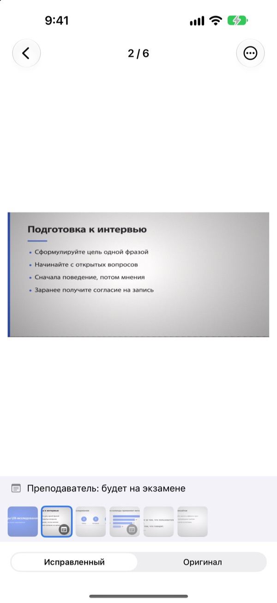
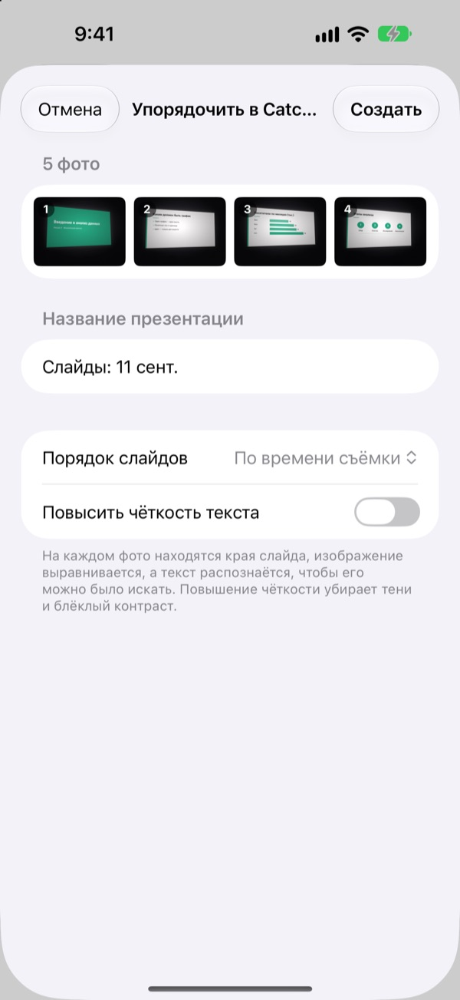
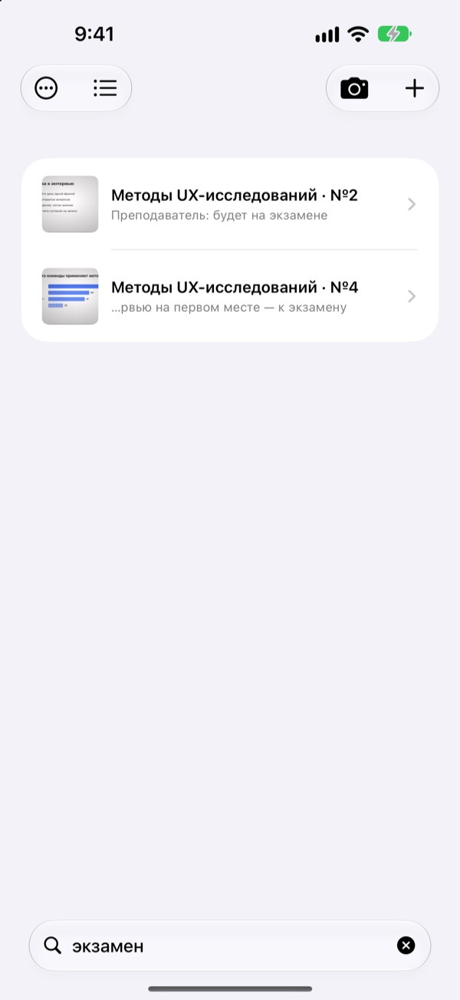

Снимаете сбоку.
Сохраняется ровно.
Камера находит четыре угла слайда, выпрямляет его и обрезает всё лишнее вокруг. Слайды, снятые подряд, собираются в одну презентацию.
Одна покупка, все функции. Без подписки и без аккаунта.

Выпрямите слайд сами
Это фото снято под углом с бокового места в аудитории. Зелёная рамка показывает найденные углы слайда.
Открыли галерею перед экзаменом и не нашли нужный слайд?
Слайды с задних рядов всегда выходят кривыми и теряются среди селфи и чеков. А в тихой аудитории не хочется щёлкать затвором. CatchSlide снимает беззвучно, выравнивает каждый слайд и хранит их по презентациям.
Ровно с первого кадра
Камера следит за четырьмя углами слайда в реальном времени и подсвечивает их зелёным. Даже снятый под углом слайд выравнивается, будто вы сидели напротив, а фон обрезается.
Звука затвора нет. Включите режим Автосъемка, и приложение само снимет каждый новый слайд, пропуская смазанные кадры.

Старые фото тоже, разом
Выберите несколько фото с лекции в приложении «Фото» и поделитесь ими с CatchSlide. Они выпрямятся и сложатся в одну презентацию в том порядке, в каком вы снимали.
Функция Повысить чёткость текста убирает тени и блёклый контраст.

Найдётся по одному слову
CatchSlide распознаёт текст на каждом слайде прямо на устройстве. Даже через несколько недель нужный слайд найдётся по одному запомнившемуся слову.
Заметки к слайдам тоже ищутся. Отметьте их словом экзамен, и все темы к экзамену соберутся одним поиском.

Три шага, чтобы начать
- 1
Откройте камеру
Кнопкой в списке, виджетом на экране «Домой» или с экрана блокировки.
- 2
Поймайте слайд в кадр
Когда углы станут зелёными, нажмите на затвор или доверьтесь автосъёмке.
- 3
Возвращайтесь к презентациям
Ищите, добавляйте заметки и сохраняйте PDF для повторения.
Что можно сделать с презентацией
- Запись
- Записывайте звук во время съёмки, а потом слушайте каждый слайд с того момента, когда он был снят
- Расшифровка
- Превращает запись в текст, показывает, что говорили на каждом слайде, и участвует в поиске
- Итоги с ИИ
- Кратко пересказывает презентацию по тексту слайдов и расшифровке (iOS 26 или новее на устройствах с Apple Intelligence)
- Конспект для повторения: по одному, два или четыре слайда на странице
- Markdown
- Архив .zip для Notion или Obsidian
- PowerPoint
- Экспорт в .pptx с расшифровкой в заметках докладчика
- Объединение
- Выберите несколько презентаций и соедините их в одну
- Синхронизация iCloud
- Включите, чтобы видеть презентации на других устройствах с тем же Apple ID. По умолчанию выключена
- Виджеты
- Открывают камеру прямо с экрана «Домой» или экрана блокировки
Распознавание текста, расшифровка и итоги с ИИ работают на устройстве.
Покупаете один раз, получаете всё
CatchSlide
- Беззвучная съёмка, автосъёмка и выравнивание
- Импорт сразу нескольких фото из «Фото»
- Слайды по презентациям, поиск по тексту и заметкам
- Запись, расшифровка и итоги с ИИ
- Экспорт в PDF, Markdown и PowerPoint
- Синхронизация iCloud и виджеты
Чаевые (по желанию)
- Если приложение вам помогает, можно оставить разработчику небольшие чаевые
- Чаевые ничего не открывают. Все функции работают и без них
Оставить их можно на экране «Мои данные».
Нет подписки и платных дополнений. Цену для вашей страны смотрите в App Store.
Вопросы и ответы
Как снять слайд?
Откройте камеру и наведите её на слайд. Когда углы станут зелёными, нажмите на затвор. Если включена автосъёмка, приложение само снимет следующий слайд, как только он сменится.
Слышен ли звук затвора?
Нет. Кадр сохраняется прямо из видоискателя, поэтому съёмка беззвучная в любой стране.
Почему снимки попали в одну презентацию?
Если следующий кадр снят меньше чем через 5 минут после предыдущего, он считается частью той же презентации. Нажмите на название в списке, чтобы переименовать её, а разделившиеся презентации соедините через Объединить презентации.
Можно ли добавить уже снятые фото?
Да. Выберите фото в приложении «Фото» и поделитесь ими с CatchSlide или нажмите ＋ в списке и выберите Импорт из Фото. Фото выпрямятся и сложатся в одну презентацию в порядке съёмки.
Углы определились неправильно.
Откройте слайд, выберите Настроить углы в меню ⋯ и перетащите четыре угла на место. Определять автоматически найдёт их заново, а Всё изображение оставит фото целиком. Оригинал всегда сохраняется, так что выровнять заново можно в любой момент.
Можно ли искать по тексту на слайдах?
Введите слово в поле поиска над списком. Поиск идёт по тексту слайдов, названиям презентаций, заметкам и расшифровкам и сразу открывает нужный слайд. Текст распознаётся на устройстве.
Как сохранить PDF?
В презентации откройте меню «Поделиться», выберите Экспорт в PDF и укажите, сколько слайдов ставить на страницу: один, два или четыре. Затем сохраните файл в «Файлы» или отправьте в другое приложение.
Как поменять порядок слайдов или удалить их?
В презентации нажмите на слайд и удерживайте, затем перетащите. В том же меню можно удалить слайд или поделиться им, а кнопка Выбрать позволяет удалить сразу несколько.
Как работают запись и итоги с ИИ?
Включите Запись вверху экрана камеры, и к каждому слайду прикрепится звук того момента. В разделе Заметки к презентации кнопка Подвести итоги с ИИ составит краткое содержание по тексту слайдов и расшифровке. Итоги с ИИ доступны на устройствах с Apple Intelligence и iOS 26 или новее.
Где хранятся мои слайды и записи?
На вашем устройстве. В ваш iCloud они попадают, только если включить Синхронизация в разделе «Мои данные». Аккаунт не нужен. Подробнее в Политике конфиденциальности.
Вопросы, сообщения об ошибках и идеи присылайте на leeo@kakao.com.